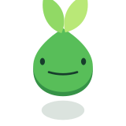

A · Vigente
Referencia actual
160 px100 px60 px32 px
Icono
B · Redonda
Cuerpo redondo · hojas suaves
160 px100 px60 px32 px
Icono
C · Almendrada
Cuerpo en punta · hojas verticales

160 px100 px60 px32 pxIcono
D · Achatada
Cuerpo ancho · hojas cortas
160 px100 px60 px32 px
Icono
E · Abierta
Hojas separadas hacia los lados
160 px100 px60 px32 px
F · Inclinada
Cuerpo ladeado · hojas acompañadas
160 px100 px60 px32 px